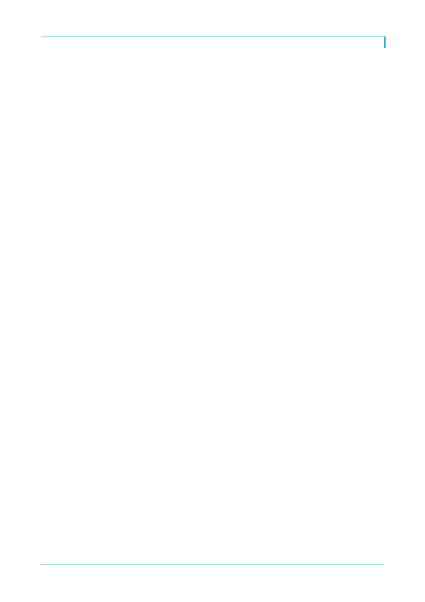

탐방속보
러시아는 올해 초부터 정부가 지정한 판매 수수료(매출액 차감 항목)가 기존 15%에서
5%로 축소돼 매출액과 이익이 개선되고 있음. 이를 제외한 실질 성장률도 10% 정도
로 양호
Implication & Valuation
중국 사업이 2분기 저점으로 완만하지만 개선됨에 따라 하반기에는 전 지역의 실적이
상반기대비 향상될 것
올해 예상 수정 PER은 22.2배(12개월로 환산)로 세계 제과사 평균인 22.4배와 중국
제과사 평균인 24.4배대비 저평가
영업모멘텀이 개선됨에도 불구하고 주가지표는 peers대비 낮아 향후 주가의 상승 가
능성이 높은 듯. 추가로 중국 법인의 수익성 개선 및 베트남의 외형 성장 속도가 주가
상승폭을 결정하는 변수가 될 전망
2